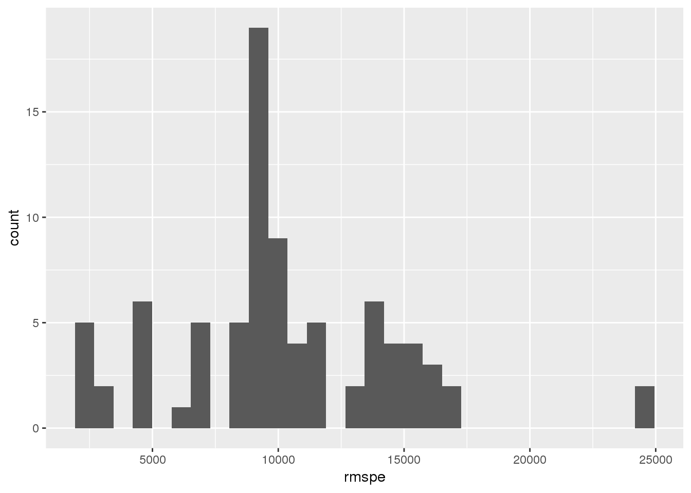

The following data analysis workflow shows off drake’s ability to generate lots of reproducibly-tracked tasks with ease. The same technique would be cumbersome, even intractable, with GNU Make.
Write the code files to your workspace.
drake_example("gsp")The new gsp folder now includes a file structure of a serious drake project, plus an interactive-tutorial.R to narrate the example. The code is also online here.
The goal is to search for factors closely associated with the productivity of states in the USA around the 1970s and 1980s. For the sake of simplicity, we use gross state product as a metric of productivity, and we restrict ourselves to multiple linear regression models with three variables. For each of the 84 possible models, we fit the data and then evaluate the root mean squared prediction error (RMSPE).
\[ \begin{aligned} \text{RMSPE} = \sqrt{(\text{y} - \widehat{y})^T(y - \widehat{y})} \end{aligned} \] Here, \(y\) is the vector of observed gross state products in the data, and \(\widehat{y}\) is the vector of predicted gross state products under one of the models. We take the best variables to be the triplet in the model with the lowest RMSPE.
The Produc dataset from the Ecdat package contains data on the Gross State Product from 1970 to 1986. Each row is a single observation on a single state for a single year. The dataset has the following variables as columns. See the references later in this report for more details.
gsp: gross state product.state: the state.year: the year.pcap: private capital stock.hwy: highway and streets.water: water and sewer facilities.util: other public buildings and structures.pc: public capital.emp: labor input measured by the employment in non-agricultural payrolls.unemp: state unemployment rate.library(Ecdat)
data(Produc)
head(Produc)
## state year pcap hwy water util pc gsp emp
## 1 ALABAMA 1970 15032.67 7325.80 1655.68 6051.20 35793.80 28418 1010.5
## 2 ALABAMA 1971 15501.94 7525.94 1721.02 6254.98 37299.91 29375 1021.9
## 3 ALABAMA 1972 15972.41 7765.42 1764.75 6442.23 38670.30 31303 1072.3
## 4 ALABAMA 1973 16406.26 7907.66 1742.41 6756.19 40084.01 33430 1135.5
## 5 ALABAMA 1974 16762.67 8025.52 1734.85 7002.29 42057.31 33749 1169.8
## 6 ALABAMA 1975 17316.26 8158.23 1752.27 7405.76 43971.71 33604 1155.4
## unemp
## 1 4.7
## 2 5.2
## 3 4.7
## 4 3.9
## 5 5.5
## 6 7.7First, we load the required packages. Drake is aware of all the packages you load with library() or require().
library(drake)
library(Ecdat) # econometrics datasets
library(knitr)
library(ggplot2)Next, set up our workflow plan data frame in stages. We start with the models. Each model has 3 predictors, and we try all 84 possible models.
predictors <- setdiff(colnames(Produc), "gsp")
combos <- t(combn(predictors, 3))
head(combos)
## [,1] [,2] [,3]
## [1,] "state" "year" "pcap"
## [2,] "state" "year" "hwy"
## [3,] "state" "year" "water"
## [4,] "state" "year" "util"
## [5,] "state" "year" "pc"
## [6,] "state" "year" "emp"
targets <- apply(combos, 1, paste, collapse = "_")
commands <- apply(combos, 1, function(row){
covariates <- paste(row, collapse = " + ")
formula <- paste0("as.formula(\"gsp ~ ", covariates, "\")")
command <- paste0("lm(", formula, ", data = Produc)")
})
model_plan <- data.frame(target = targets, command = commands)
head(model_plan)
## target
## 1 state_year_pcap
## 2 state_year_hwy
## 3 state_year_water
## 4 state_year_util
## 5 state_year_pc
## 6 state_year_emp
## command
## 1 lm(as.formula("gsp ~ state + year + pcap"), data = Produc)
## 2 lm(as.formula("gsp ~ state + year + hwy"), data = Produc)
## 3 lm(as.formula("gsp ~ state + year + water"), data = Produc)
## 4 lm(as.formula("gsp ~ state + year + util"), data = Produc)
## 5 lm(as.formula("gsp ~ state + year + pc"), data = Produc)
## 6 lm(as.formula("gsp ~ state + year + emp"), data = Produc)Next, we make a plan to judge each model based on its root mean squared prediction error (RMSPE).
commands <- paste0("get_rmspe(", targets, ", data = Produc)")
targets <- paste0("rmspe_", targets)
rmspe_plan <- data.frame(target = targets, command = commands)
head(rmspe_plan)
## target command
## 1 rmspe_state_year_pcap get_rmspe(state_year_pcap, data = Produc)
## 2 rmspe_state_year_hwy get_rmspe(state_year_hwy, data = Produc)
## 3 rmspe_state_year_water get_rmspe(state_year_water, data = Produc)
## 4 rmspe_state_year_util get_rmspe(state_year_util, data = Produc)
## 5 rmspe_state_year_pc get_rmspe(state_year_pc, data = Produc)
## 6 rmspe_state_year_emp get_rmspe(state_year_emp, data = Produc)We need to define a function to get the RMSPE for each model.
get_rmspe <- function(lm_fit, data){
y <- data$gsp
yhat <- predict(lm_fit, data = data)
terms <- attr(summary(lm_fit)$terms, "term.labels")
data.frame(
rmspe = sqrt(mean((y - yhat)^2)), # nolint
X1 = terms[1],
X2 = terms[2],
X3 = terms[3]
)
}In our current plan, RMSPE is distributed over 84 targets (one for each model). Let’s plan to combine them all together in a single data frame.
rmspe_results_plan <- gather_plan(
plan = rmspe_plan,
target = "rmspe",
gather = "rbind"
)At the end, let’s generate a pdf plot of the RMSPE scores and a knitr report.
output_plan <- drake_plan(
ggsave(
filename = file_out("rmspe.pdf"),
plot = plot_rmspe(rmspe)
),
knit(knitr_in("report.Rmd"), file_out("report.md"), quiet = TRUE)
)
## Warning: knitr/rmarkdown report 'report.Rmd' does not exist and cannot be
## inspected for dependencies.
## Warning: knitr/rmarkdown report 'report.Rmd' does not exist and cannot be
## inspected for dependencies.
head(output_plan)
## # A tibble: 2 x 2
## target command
## <chr> <chr>
## 1 "\"rmspe.pdf\"" "ggsave(filename = file_out(\"rmspe.pdf\"), plot = plot…
## 2 "\"report.md\"" "knit(knitr_in(\"report.Rmd\"), file_out(\"report.md\")…We see warnings above because our R Markdown report report.Rmd does not exist yet. You can find it here, and the code below generates it.
local <- file.path("examples", "gsp", "report.Rmd")
path <- system.file(path = local, package = "drake", mustWork = TRUE)
file.copy(from = path, to = "report.Rmd", overwrite = TRUE)
## [1] TRUEAt this point, we can gather together the whole workflow plan.
whole_plan <- rbind(model_plan, rmspe_plan, rmspe_results_plan, output_plan)Before we run the project, we need to define the plot_rmspe() function.
plot_rmspe <- function(rmspe){
ggplot(rmspe) +
geom_histogram(aes(x = rmspe), bins = 30)
}Now, we can run the project
make(whole_plan, verbose = FALSE)
## Saving 7 x 5 in imageHere are the root mean squared prediction errors of all the models.

And here are the best models. The best variables are in the top row under X1, X2, and X3.
head(results[order(results$rmspe, decreasing = FALSE), ])
## rmspe X1 X2 X3
## rmspe_state_hwy_emp 2613.669 state hwy emp
## rmspe_state_water_emp 2664.842 state water emp
## rmspe_state_util_emp 2665.744 state util emp
## rmspe_state_pc_emp 2666.058 state pc emp
## rmspe_state_pcap_emp 2675.336 state pcap emp
## rmspe_state_emp_unemp 2692.687 state emp unempIf we were using Make instead of drake with the same set of targets, the analogous Makefile would look something like this pseudo-code sketch.
models = model_state_year_pcap.rds model_state_year_hwy.rds ... # 84 of these
model_%
Rscript -e 'saveRDS(lm(...), ...)'
rmspe_%: model_%
Rscript -e 'saveRDS(get_rmspe(...), ...)'
rmspe.rds: rmspe_%
Rscript -e 'saveRDS(rbind(...), ...)'
rmspe.pdf: rmspe.rds
Rscript -e 'ggplot2::ggsave(plot_rmspe(readRDS("rmspe.rds")), "rmspe.pdf")'
report.md: report.Rmd
Rscript -e 'knitr::knit("report.Rmd")'
There are three main disadvantages to this approach.
Rscript, which means that more time is spent initializing R sessions than doing the actual work.*.rds files), which is cumbersome, messy, and inconvenient. Drake, on the other hand, automatically manages storage using a storr cache.models near the top of the Makefile, which is less convenient than maintaining a data frame in R.